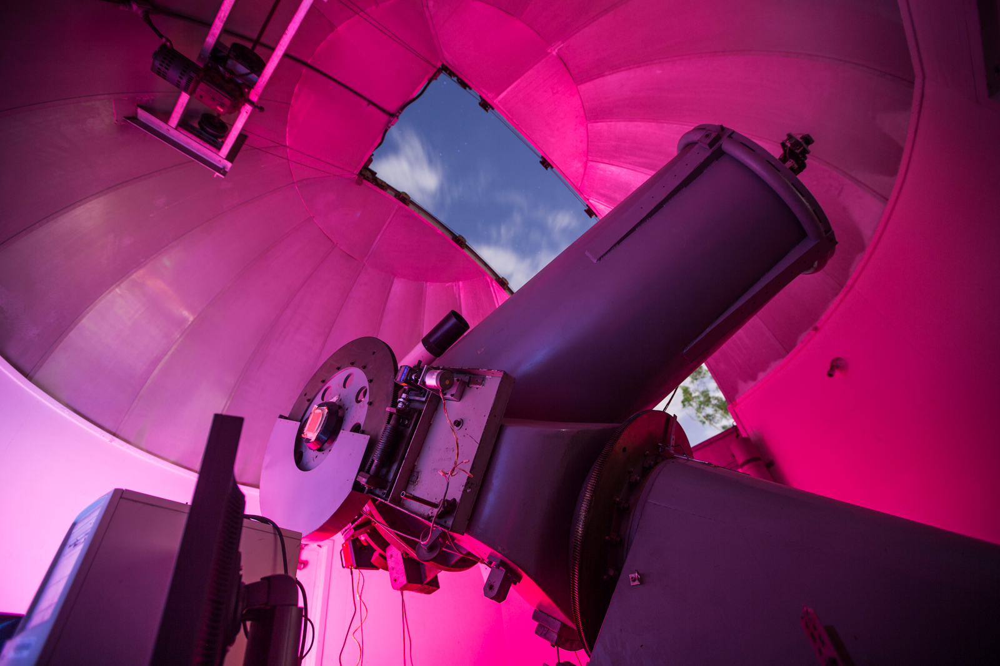
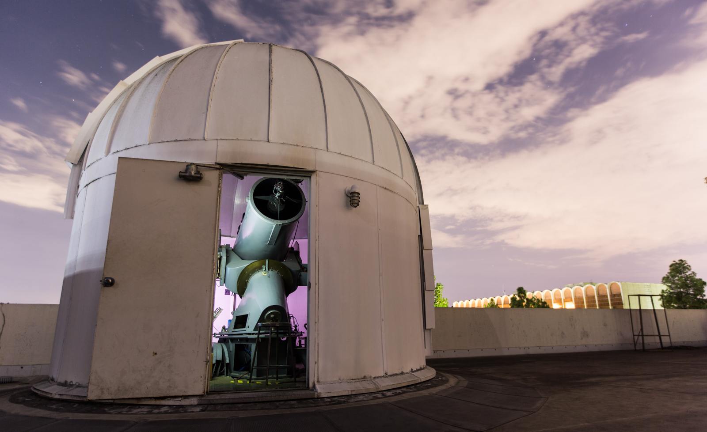
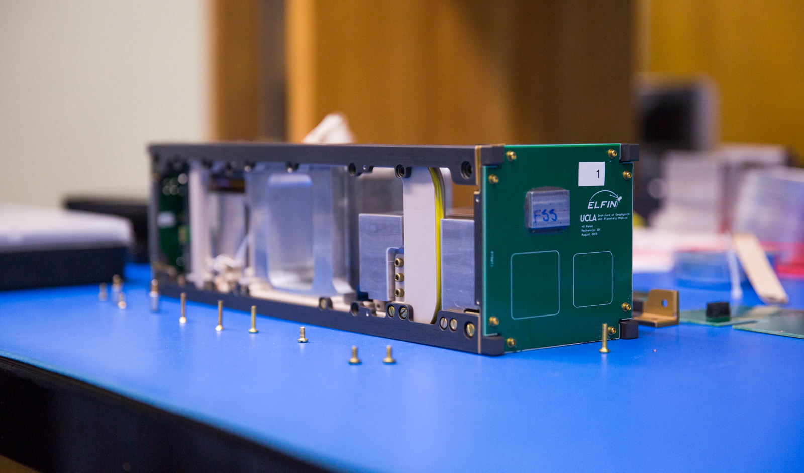
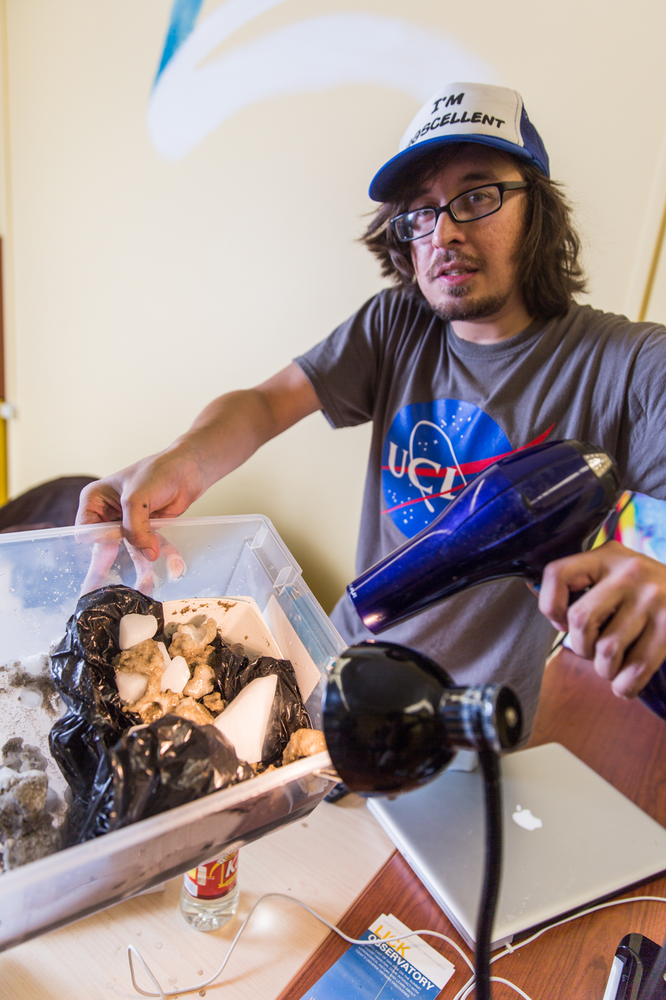
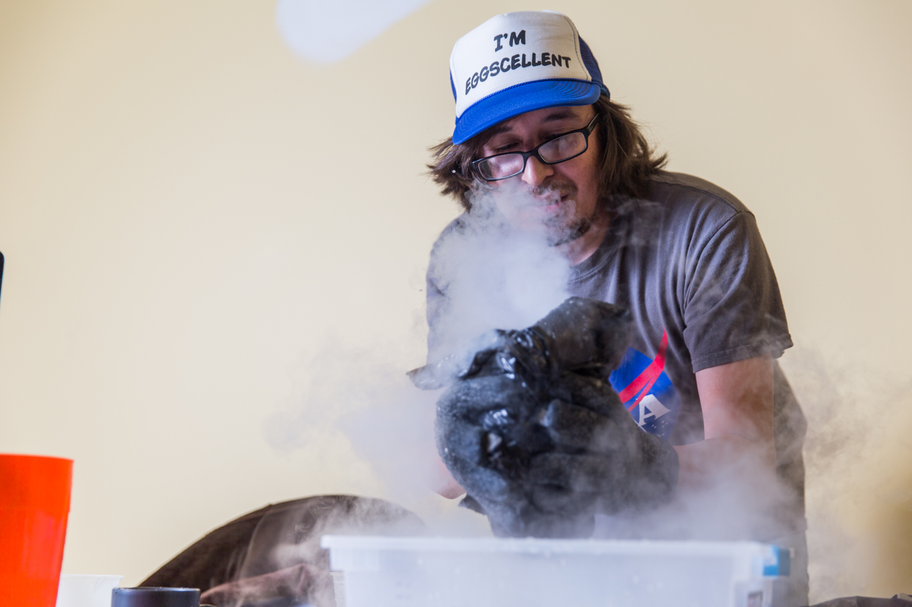
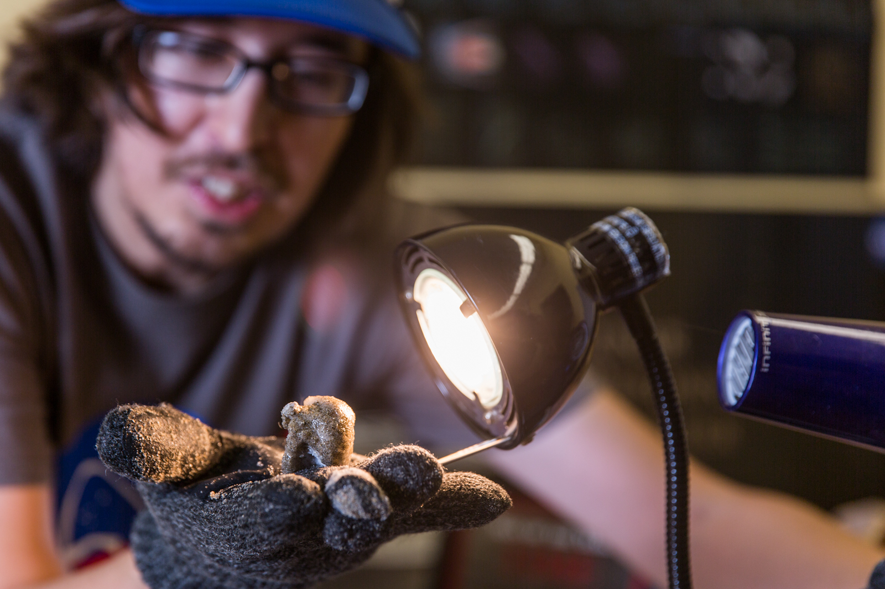
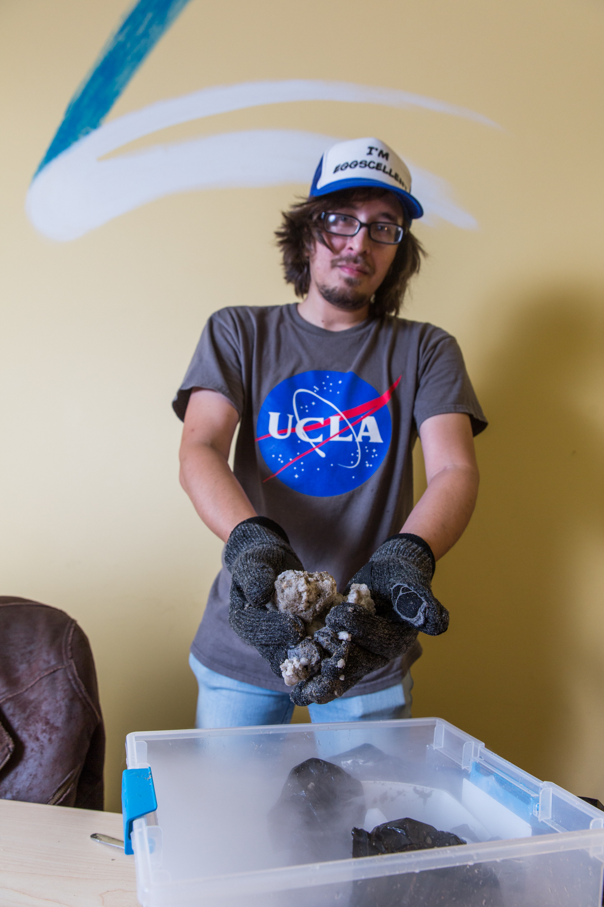
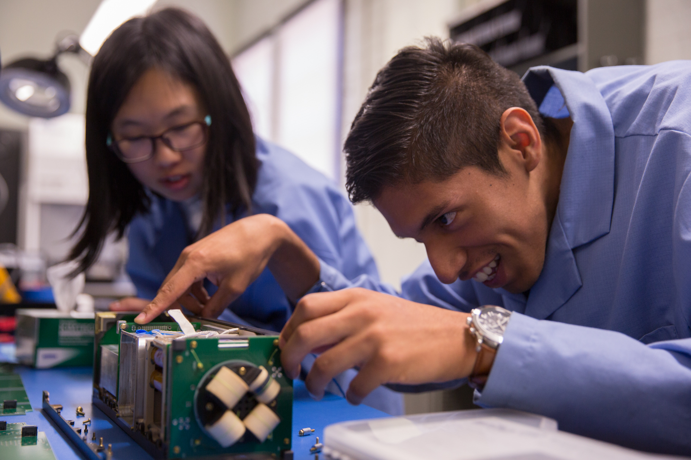
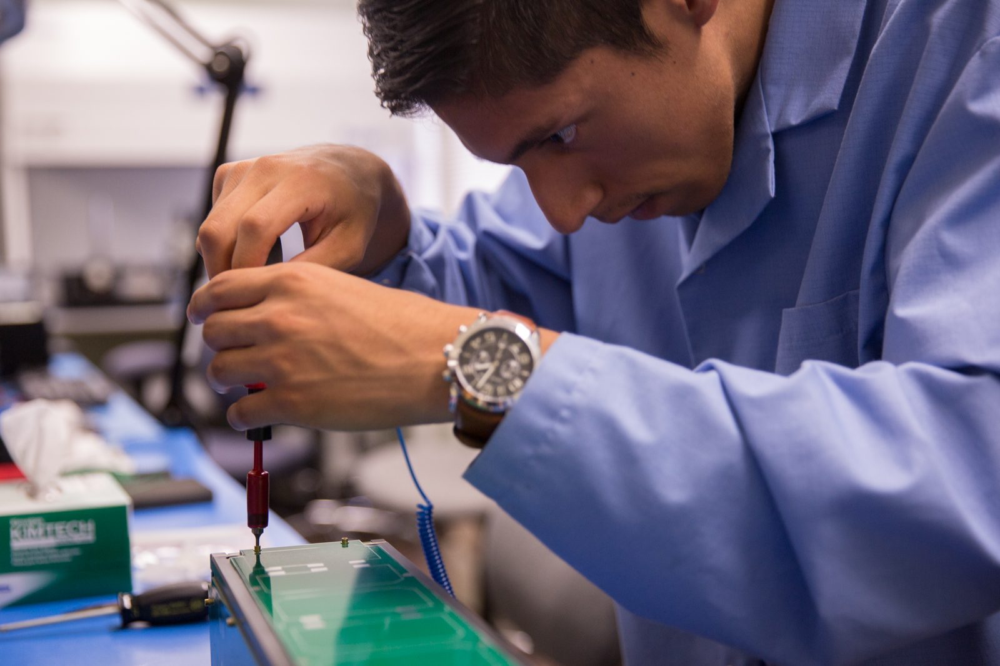
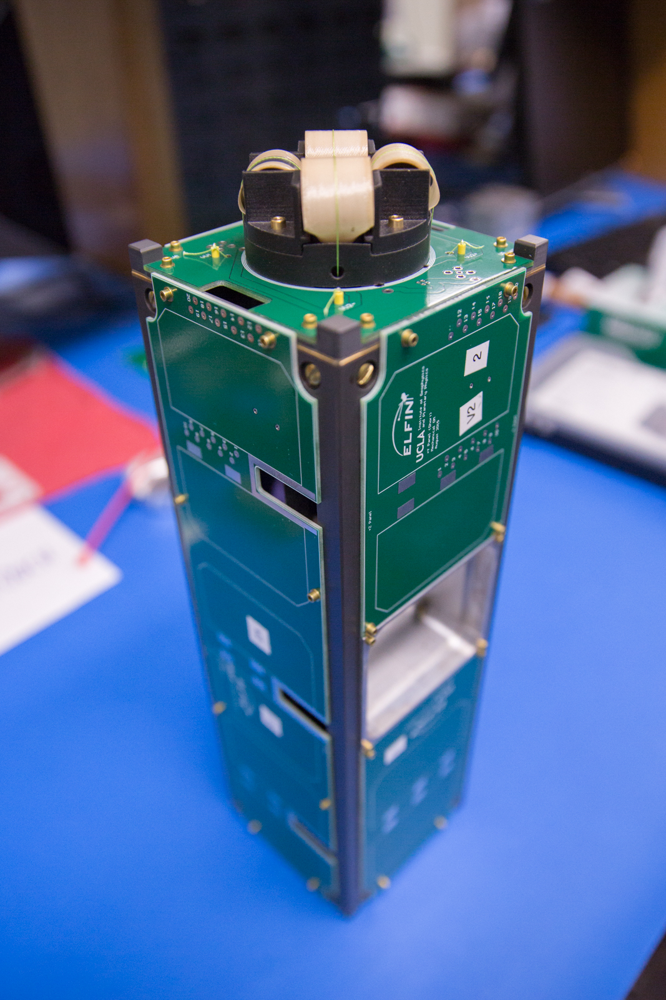

The movement to colonize Mars was founded by humans who dream of seeing footprints in the crimson dust of the Red Planet.
Technological advances have made interplanetary travel possible, if not yet feasible. In October, NASA released a plan detailing the steps it’s taking to land astronauts on Mars as early as the 2030s.
But these steps taken for mankind have not been taken alone. Planetary scientists across the globe, including those at UCLA, help fuel NASA’s goals daily, sketching new layers of detail upon our existing knowledge of space. In the past year alone, faculty-led initiatives have circled a dwarf planet near Jupiter, designed a 3-D printed home for future Martians and discovered a new planet 100 light-years away.
 “The real top-level question in astronomy and planetary science is about the origin and distribution of life,” said David Jewitt, an earth, planetary and space sciences professor at UCLA. “That’s ultimately what we would like to know – what I would like to know for sure.”
UCLA planetary science organizations such as Astronomy Live! and the Institute for Planets and Exoplanets, or iPLEX, aim to inspire the next generation of scientists through outreach on and off campus. Scientists and engineers at UCLA continue to pursue the research questions most intriguing to planetary science: How does our Earth work? How can we find alien life? What exists beyond our stratosphere?
A curiosity about space begins with the students.
Stargazing in school
Icy comets, asteroids and other celestial bodies rain about 40,000 tons of primitive cosmic dust on Earth every year, occasionally igniting at our atmosphere’s edge to paint bright meteoric strokes across the canvas of our sky.
Real shooting stars are difficult to capture, study or explain to kids. That’s when science educators turn to the kitchen.
“Comets are called dirty snowballs for a reason,” explains Dave Milewski, gritting his teeth as he wrestles with a bag of Windex, sand and corn syrup threatening to explode within a furious cloud of vaporizing dry ice. Milewski, a graduate student in astronomy, is recording a comet-making demonstration for the iPLEX website. He manages to pack the creamy brown mush into a sphere and cradles it beneath his lamp; the comet’s liquid particles boil and hop from the surface like popcorn.
The iPLEX faculty has demonstrated this process to kids and families at the annual Exploring Your Universe outreach event. Representatives from iPLEX, UCLA science departments and local organizations give families rocket demos, science lectures and planetarium shows on UCLA’s campus every November. More than 6,000 people attended the event in 2014.
iPLEX is a networking and educational institution for more than 100 faculty members, researchers and graduate students who study planetary science across departmental lines, said Jewitt, founder and director of iPLEX.
Since its launch in 2011, iPLEX has teamed up with graduate student group Astronomy Live! to bring space education to local schools six to eight times a month, showing curious students how to observe the sun using solar telescopes or construct models of the galaxy to scale.
Schools from Central Valley to Manhattan Beach have requested a taste of space from UCLA, said iPLEX director's assistant Ivy Curren. iPLEX is also working to secure grants that would bring multiple schools to UCLA’s campus for large events during the school year.
“Every 5-year-old is kind of a scientist,” Jewitt said. “You play with everything, and that’s how you figure out how to be a person. The real question is how to keep people with that childlike interest in science.”
Just ask Milewski.
Milewski – who, as a child, spent hours poring over astronomy books in the library –once read a theory about how the sun, in 4 billion years, would grow into a red giant and consume the Earth.
A 6-year-old Milewski became very, very concerned with the future of humanity.
“Ever since then, I’m always thinking about space,” Milewski said. “Most people want to know what the origin of life is – what’s our place in the universe. Even if I could just take people a few steps of the way, that would be my life’s work, and I would be very happy with that.”
A painted comet streaks across the yellow wall behind his desk in the “comet room,” where he toils daily to study digital images of celestial objects called active asteroids. Observations have revealed that these rocky bodies can “spit” ice in intermittent spurts, sometimes with the force of a nuclear explosion at 5 kilometers per second.
Milewski talked animatedly about the science of asteroids, satellites, brown dwarfs and space exploration. Still, he said he doesn’t want to force science on anyone; he only hopes to get people just as excited about science as he is.
Many UCLA students already are.
Mission Control
 On a regular Tuesday in the Mathematical Sciences Building, engineers pop a little satellite out of an oven at 212 degrees Fahrenheit.
Without its green circuit boards, the Electron Losses and Fields Investigation, or ELFIN, satellite resembles the bare framework of a house. A researcher throws on his lab coat and begins to clothe the miniature satellite, known as CubeSat, in circuit boards with special fasteners, showing a fellow researcher how to select the right screwdriver for the job.
In late 2016 or early 2017, NASA will shoot the satellite into orbit so it can analyze space weather phenomena. NASA and the National Science Foundation have awarded ELFIN more than $1 million in funding since NASA selected it for the CubeSat Launch Initiative in 2014.
The ELFIN CubeSat will circle the Earth, analyzing interactions between Earth’s magnetic field and charged particles emitted from the sun. These interactions have numerous consequences on space weather, such as creating “killer electrons” harmful to spacecraft or giving us the aurora borealis – the northern lights we see tracing iridescent lines over our planet’s poles.
ELFIN researchers mean serious business. Some of them also happen to be undergraduate students at UCLA.
“The best part about this project is bringing a concept to life, and that’s the magic of it,” said Lydia Bingley, ELFIN project manager and a graduate student in geophysics and space physics. “This model existed on software simulations, and then we fabricated it in-house. ... Students essentially run the show.”
On Oct. 7, the students transported their satellite prototype to Virginia for vibration testing, where machines vigorously shook the satellite to simulate launch into orbit. ELFIN CubeSat passed the test.
“This is the future of education,” said Vassilis Angelopoulos, an earth, planetary and space sciences professor who founded ELFIN in 2010. “Whether ELFIN researchers go into academia or research, they (will apply) the same skills, solving challenging questions they believe in. That’s the recipe, and they learn it now.”
A class at UCLA also gives students the opportunity to conduct hands-on research concerning the sky. Pauline Arriaga, an astronomy graduate student, teaches Astronomy 180: “Astrophysics Laboratory,” where students can conduct research on UCLA’s largest telescope.
Arriaga recently upgraded the camera of the 41-year-old Cassegrain, which will sit within a white dome on the roof of the Mathematical Sciences Building until her class in spring quarter. She flips a switch on the hulking, cannon-like telescope, prompting a deep mechanical hum. A slice of the dome peels back to reveal a cloudy night.
“What we can do is study systems and formation – stars that are being formed,” said Arriaga, clicking through infrared photos taken of the Orion Nebula. The purple, flame-like dust clouds surrounding the nebula – a birthplace for stars – are only visible to the human eye through an infrared filter.
“This is my telescope,” Arriaga joked, tinkering with the computers and controls within the dome. “This one will keep going for a very long time.”
Spacewalk
As a UCLA professor, David Paige may not breathe Martian air during his lifetime, but the scientific contraption he’s helping to build might get a whiff.
In 2014, NASA selected a radar designed by the earth, planetary and space sciences professor and his colleagues to outfit the Mars 2020 rover, which will depart for Mars in five years. The Radar Imager for Mars’ Subsurface Experiment, or RIMFAX, is a ground-penetrating radar that will create a 2-D map of the Red Planet’s subterranean layers.
“My colleague from Norway called me up and asked me if I wanted to get involved,” said Paige, chuckling. “It’s a little bit like a couple guys deciding to take a weekend trip to Las Vegas.”
In 2013, Paige chaired the international Present-Day Habitability of Mars conference at UCLA. During the broadcast event, experts from all over the world, including from Russia and Germany, discussed the prospects and evidence of biological activity on Mars.
“Understanding our place in the solar system and universe is important culturally, just to give people perspective,” Paige said. “I think it’s also the function of a university to reach out to the community and share what we’re learning, discovering or teaching.”
NASA’s recent announcements of salt water on Mars and water-ice regions on Pluto have garnered widespread attention. NASA’s Instagram photo of Pluto gained the agency 300,000 new followers, according to WIRED magazine. The popularity of NASA’s social media accounts – numbering more than 500 in total – inspired iPLEX to launch its own Instagram this fall, Milewski said.
But social media followers may be scrolling through pictures of alien microbes and extraterrestrial traces of life in the future. Last September, the NASA/Library of Congress Astrobiology Symposium invited science fiction expert and UCLA English professor Ursula Heise to Washington, D.C., to explore – along with other scholars – the cultural effects of alien life discovery, announcing to attendees that the topic had reached a new urgency. At one point, they discussed extraterrestrial life denialism, a social phenomenon much like the denial of climate change.
Humans have continuously revised the themes of literary science fiction to reflect society’s relationship with the environment, machines and the idea of leaving Earth for a second chance at society, Heise said.
“Things change so fast around us that science fiction, in some sense, is the only genre that can really measure up (to progress),” Heise said. “We are, unintentionally, terraforming the Earth itself. ... That’s one reason that suddenly now science fiction is resonating with our own present and what we think of as our future.”
***
ELFIN, iPLEX and the physical sciences departments at UCLA will continue to pursue the goals of life discovery, deep-space exploration and interplanetary travel in the coming years. With iPLEX’s new collaborative research agreement with NASA’s Jet Propulsion Laboratory, UCLA plans on making even more contributions to the race for space.
In December, Jewitt will pay a visit to Hawaii’s W.M. Keck Observatory, home to the world’s largest optical and infrared telescopes. He hopes his two-night stay on the dormant volcano will bring him useful data for projects that he is working on – or hopes to work on soon.
“When I was a kid, teachers always gave me the impression that knowledge is this huge thing people have been accumulating forever, and it’s so big you’ll never get to the end of it,” Jewitt said. “But the edge of knowledge is so close. Sometimes it’s only one question away.”